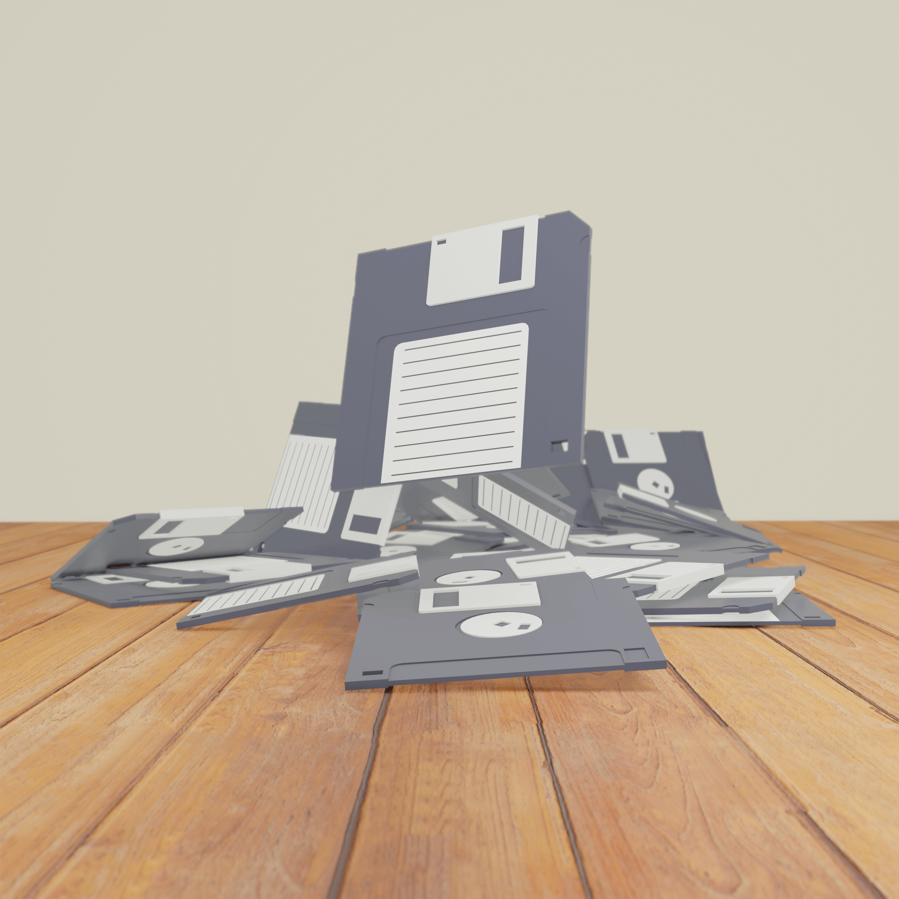

WEB
- 概要
- 個人タクシーのLP
- 制作範囲
- ヒアリング、ディレクション、デザイン
- 使用ツール
- XD/Brackets/Photoshop/Illustrator
- テーマ
- 個人タクシーのLPを作って欲しいという依頼があったので作成しました。ポップなデザインと高級感のあるデザインカンプを2種類作成し、ポップな方が採用されたので、そちらで制作を進めました。
- ターゲット
- 団体客で北海道へ旅行に来る観光客をターゲットに設定し、札幌周辺を観光してもらう。
- デザインコンセプト
- アピールポイントをヒアリングし、タクシーの装備や、観光地の写真を集めてユーザーにベネフィットを感じてもらえるように作成しました。またポップなデザインで進めましたがチープにならないよう、色や背景を試行錯誤しながらデザインを固めていきました。

- 概要
- 架空のカフェ森田彦コーヒのwebページ
- 制作範囲
- ヒアリング、ディレクション、デザイン
- 使用ツール
- XD/Brackets/Photoshop/Illustrator/Blender/Dimension
- テーマ
- ノスタルジックでもあり新しくもある憩いを堪能できるカフェ
- ターゲット
- オープンして１年ほど。ぼちぼち順調に来てるがさらに集客を伸ばしたいのでホームページを新規で開設したいとの注文 客層は幅広く取り込みたい
- デザインコンセプト
- 新しさとノスタルジックというテーマの元、ニューモーフィズムとローポリ3D素材を生かしてカフェのサイトを作成しました。Blenderで3Dモデリングを行い素材を作成しています。
Illustratorでロゴを作成しPhotoshopを使って看板をレタッチ、コラージュしたりとソフトウェアを総合的に使いwebサイトを作成しました。
- 概要
- ポートフォリオサイト
- 制作範囲
- ディレクション、デザイン
- 使用ツール
- XD/Brackets/Photoshop/Illustrator/Blender/AfterEffects
- デザインコンセプト
- トップページにはBlenderで作成したフロッピーディスクのgifアニメを配置 知識が具現化されて積み重なる、成長する様子をイメージして作成。 そこから派生して全体的にレトロかつタイムレスな良さを感じるwebサイトを目指しました。
3DCG

- 概要
-
Blenderで作成したレンダリング画像です。
3DCADの経験を生かして何か作れないか模索している中で独学で進めています。
CADの様なブーリアン機能が使えるのでハードサーフェスモデリングの方が得意です。
- 制作範囲
- モデリング、テクスチャ/PBR作成、レンダリング
- 使用ツール
- Blender/Gimp
Photo

- 概要
- 風景写真、色温度や光で空気感を表現できないかを試しています。 拡張ファームウェアのmagic lanternを使用して細かく調整しながら撮影しました。
- 使用カメラ
- EOS Kiss X5
Misc
- 概要
- 静物デッサン
- 制作時間
- 8時間
- 使用ツール
- 鉛筆/練り消し/消しゴム
- 概要
- チラシ作成
- デザインコンセプト
- 課題の中でチラシの作成があり作成しました。 内容の文章とターゲットだけが設定されていてそれに合わせて訴求力を持たせた デザインを目指しました。 文章量が多いので、どうやって読みやすくしながらスマートに見せるかを考える必要があり。 背景で視線誘導しつつ、イラストを入れたり、表裏で情報量を同じくらいにする工夫をしました。
- ターゲット
- 子供のいる家庭で女性、最終的には新築物件の購入の相談につなげたい。
- 使用ツール
- Photoshop,Illustrator
- 概要
- photoshop習作
- 使用ツール
- Photoshop
- 概要
- 前職で作成したインターンシップ生向けのプログラム 実際にモデリングさせると時間がかかるため設計に必要になる部分を考えてもらい 実務的な難しい部分は自動化させる目的で作成しました。 パラメーターに合わせて形状が変化し、自転車のコスト(重量から測定)、応力解析結果などを出力します。 難しかった点はターゲットアプリの切り替えタイミングや 応力解析の自動化マクロについて解説しているサイトが殆どなかったのでデータを格納した変数や 操作を実行する関数を探すのが大変でした。
- 制作範囲
- 要件定義、コーディング、デバッグ
- 使用ツール
- Excel/CATIA V5/VBA
- 概要
- 航空機サプライヤーに納品したプログラム。 元あるワイヤーハーネス形状の計算式を別のものに置き換えて 保存、データベース登録を自動で一括動作させる目的で作成しました。 難しかった部分は1データに数百パーツが存在する中、ユーザーの操作不要で必要な形状を探し当てるアルゴリズムと変化させるべき部分の取得 エアバスとボーイングで計算方法が違うため その切替え、データベースへのアクセスなどがあります。
- 制作範囲
- 要件定義、コーディング、デバッグ
- 使用ツール
- CATIA V5/VB.net/Visual Studio